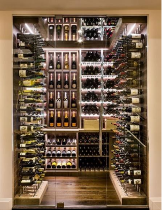

Cuidados essenciais
O vinho é uma bebida sensível a fatores externos. Para manter sua qualidade, é fundamental seguir algumas recomendações simples que fazem toda a diferença.
- Armazene sempre em local fresco e arejado;
- Evite exposição direta à luz solar;
- Controle a temperatura, mantendo entre 12°C e 18°C;
- Não deixe em locais sujeitos a vibrações constantes;
- Mantenha as garrafas deitadas para que a rolha não resseque.
|
Ao adotar esses cuidados, garantimos que os aromas e sabores originais de cada garrafa sejam preservados. Isso é especialmente importante para rótulos mais raros ou de maior valor. Também recomendamos que, sempre que possível, seja utilizada uma adega climatizada para os vinhos mais delicados. Esse investimento ajuda a manter a temperatura e a umidade ideais, evitando a deterioração da bebida. |

Exemplo de armazenagem adequada |